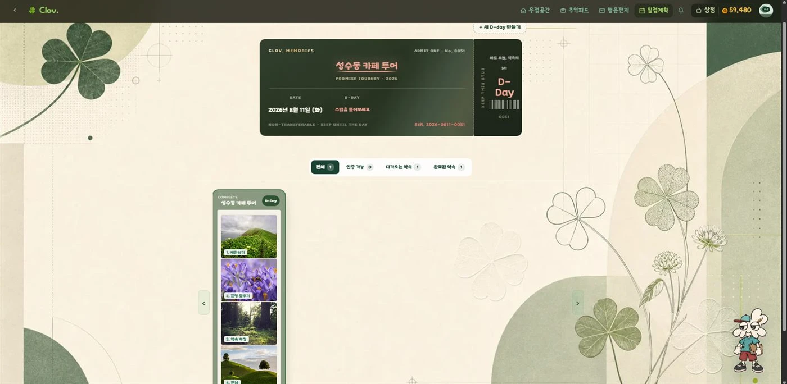
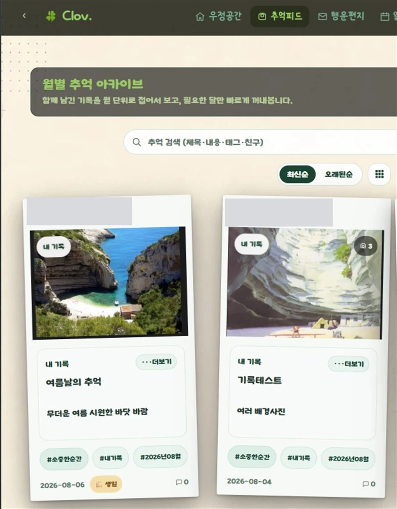
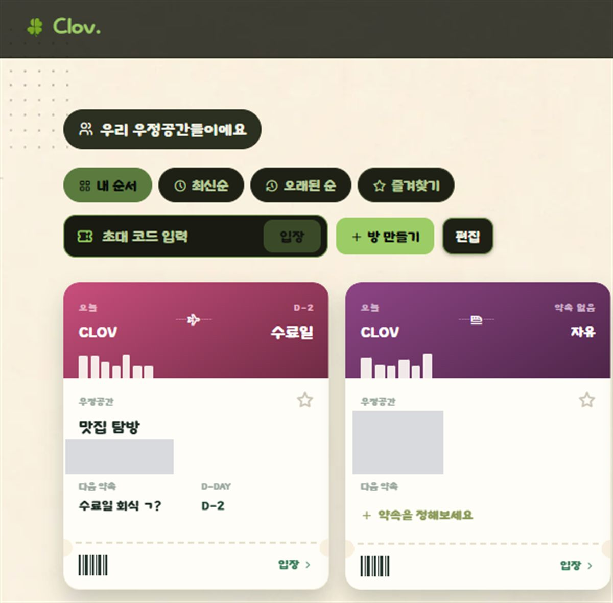

TEAM PROJECT · 2026.06.26 – 2026.08.14 · 4인
Clov. — 약속이 자라나는 공간
친구와의 약속과 추억을 기록하는 웹 서비스입니다. 4인 팀에서 저는 상점(Shop) 도메인을 전담했고, 아래 강점들은 이 프로젝트를 진행하며 실제로 확인한 것입니다.
- Java 21
- Spring Boot 4
- Spring Security
- OAuth2
- JWT
- MyBatis
- MySQL 8
- React 19
- Vite
- React Router
- TanStack Query
- Zustand
- Emotion
- Cloudflare R2
- Brevo SMTP
- Google Cloud
- Nginx
- Docker
- GitHub Actions
- JUnit5
- Testcontainers
실제 화면 · clovlab.store

약속을 티켓처럼 담은 D-Day 카드
다가오는 약속을 놀이공원 입장권 같은 감성적인 티켓 디자인으로 보여줍니다. 날짜와 함께 남은 D-Day를 세어주고, 완료된 약속은 카드 아래에 타임라인처럼 쌓여요.

월별로 모아보는 추억 아카이브
함께 남긴 사진과 글을 월 단위로 접어서 볼 수 있는 아카이브예요. 제목·내용·태그·친구로 검색할 수 있어서, 오래된 추억도 금방 다시 꺼내볼 수 있어요.

친구별로 관리하는 우정공간
초대 코드 하나로 친구와 우정공간을 만들고, 최신순·오래된순·즐겨찾기로 원하는 순서로 정리할 수 있어요. 각 공간 카드에는 다음 약속과 D-Day가 바로 보여요.
강점과 근거
아래 강점은 Clov. 프로젝트에서 상점(Shop) API를 담당하며 실제로 확인한 것입니다. 자세한 코드는 GitHub 저장소에서 확인할 수 있습니다.
-
정보를 한곳에 모아 정리하는 힘
API 명세와 데이터 구조를 문서로 먼저 정리해 팀이 함께 참고할 기준을 만들었습니다.
-
끝까지 포기하지 않는 근성
동시 요청 시 잔액이 꼬이는 문제를 원인부터 끝까지 파고들어 해결했습니다.
-
맡은 바를 성실히 수행하는 책임감
상점 도메인 전체를 단독으로 맡아 기간 내 완성하고 배포까지 마쳤습니다.